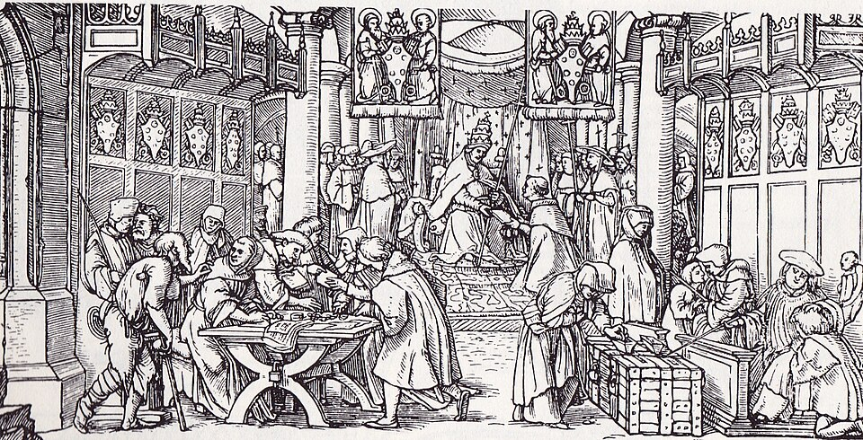
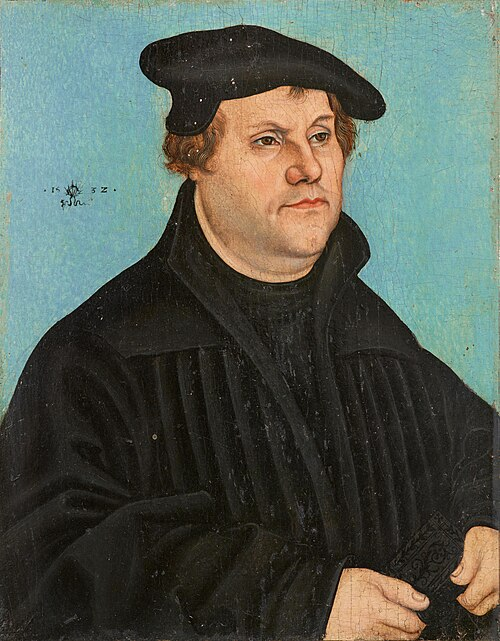
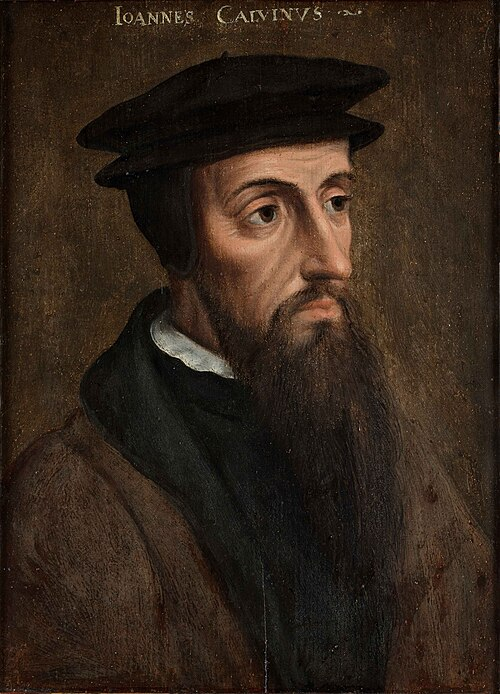
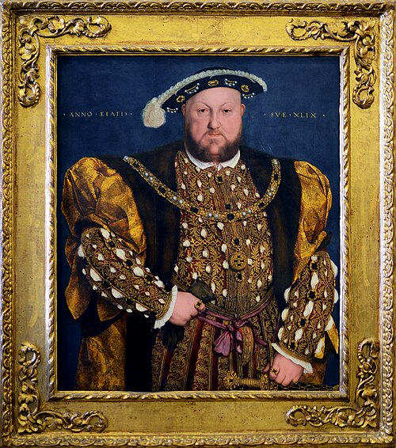
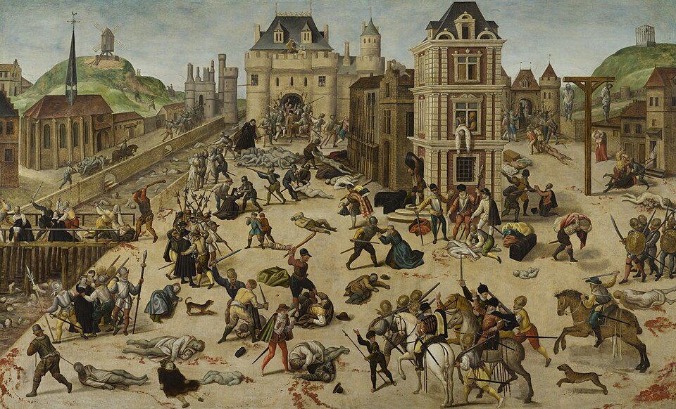
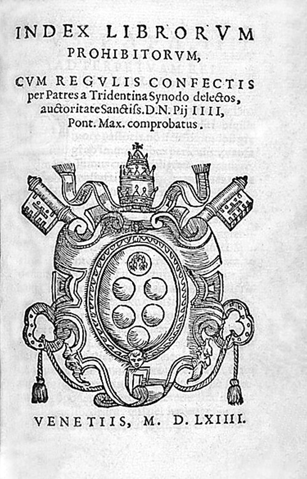

Istorie · Clasa a 6-a · Începutul epocii moderneGeschichte · Klasse 6 · Beginn der Neuzeit
În 1517, un profesor din Wittenberg a pus întrebări incomode Bisericii Catolice. Din ele a ieșit o mișcare care a schimbat religia, politica și chiar școala în toată Europa: Reforma. Biserica Catolică a răspuns cu Contrareforma. Aflăm cauzele, oamenii, locurile și urmările. 1517 stellte ein Professor aus Wittenberg der katholischen Kirche unbequeme Fragen. Daraus wurde eine Bewegung, die Religion, Politik und sogar die Schule in ganz Europa veränderte: die Reformation. Die katholische Kirche antwortete mit der Gegenreformation. Wir erfahren Ursachen, Personen, Orte und Folgen.
Reforma a fost o mișcare de contestare a autorității spirituale a Bisericii Catolice. A început în Germania, la începutul secolului al XVI-lea, și s-a extins în toată Europa Nordică și în unele teritorii din Europa Occidentală și Centrală. Apasă pe evenimentele de pe axă.Die Reformation war eine Bewegung, die die geistliche Autorität der katholischen Kirche infrage stellte. Sie begann Anfang des 16. Jahrhunderts in Deutschland und breitete sich über ganz Nordeuropa und einige Gebiete West- und Mitteleuropas aus. Tippe auf die Ereignisse auf der Zeitachse.

Vânzarea indulgențelor, gravură atribuită lui Hans Holbein cel Tânăr, cca 1529. Domeniu public.Verkauf von Ablassbriefen, Holzschnitt, Hans Holbein dem Jüngeren zugeschrieben, um 1529. Gemeinfrei.
Călugăr și profesor la Universitatea din Wittenberg, inițiatorul Reformei.Mönch und Professor an der Universität Wittenberg, Begründer der Reformation.

Reforma religioasă a început prin activitatea lui Martin Luther, călugăr și profesor la Universitatea din Wittenberg. El critica vânzarea de indulgențe, luxul și lăcomia prelaților și cerea o organizare mai simplă a Bisericii, pe care o voia pusă sub autoritatea puterii laice. Ideea de bază a lui Luther era că omul putea să primească în mod gratuit harul lui Dumnezeu și să se mântuiască prin credință.Die Reformation begann mit dem Wirken Martin Luthers, Mönch und Professor an der Universität Wittenberg. Er kritisierte den Ablasshandel sowie Luxus und Habgier der Kirchenfürsten und forderte eine einfachere Organisation der Kirche, die er unter die Autorität der weltlichen Macht stellen wollte. Luthers Grundgedanke war, dass der Mensch Gottes Gnade unverdient empfangen und durch den Glauben gerettet werden kann.
Cum voia Luther să arate noua Biserică? Apasă pe fiecare idee.Wie wollte Luther die neue Kirche gestalten? Tippe auf jede Idee.
Se povestește că, pe 31 octombrie 1517, Luther a bătut în cuie pe ușa bisericii din Wittenberg 95 de teze împotriva vânzării de indulgențe. Istoricii discută dacă a făcut-o chiar așa; sigur este că tezele s-au răspândit foarte repede prin tipar.Man erzählt, Luther habe am 31. Oktober 1517 95 Thesen gegen den Ablasshandel an die Tür der Kirche in Wittenberg genagelt. Historiker diskutieren, ob es wirklich so war; sicher ist, dass sich die Thesen durch den Buchdruck sehr schnell verbreiteten.
După ce a fost declarat în afara legii, Luther s-a ascuns în castelul Wartburg, sub numele „cavalerul Jörg”. Acolo a tradus Noul Testament în germană, în aproximativ 11 săptămâni. Traducerea l-a făcut pe Luther și mai cunoscut și a contribuit la formarea limbii germane scrise.Nachdem er für vogelfrei erklärt worden war, versteckte sich Luther auf der Wartburg unter dem Namen „Junker Jörg“. Dort übersetzte er das Neue Testament ins Deutsche, in etwa 11 Wochen. Die Übersetzung machte Luther noch bekannter und trug zur Entstehung der deutschen Schriftsprache bei.
Reformator francez, care a insistat pe ideea predestinării.Französischer Reformator, der die Idee der Prädestination in den Mittelpunkt stellte.

Ideile lui Luther i-au inspirat și pe alți reformatori; unul dintre cei mai importanți a fost Jean Calvin. Ca și Luther, el considera credința ca fiind esențială pentru mântuire și insista pe ideea predestinării: Dumnezeu hotărăște dinainte cine se va mântui și cine nu. Opera lui principală este Învățătura religiei creștine. Adepții lui din Franța au fost numiți hughenoți. Doctrina lui se numește calvinism.Luthers Ideen inspirierten auch andere Reformatoren; einer der wichtigsten war Johannes Calvin. Wie Luther hielt er den Glauben für entscheidend zur Rettung und betonte die Prädestination: Gott bestimmt im Voraus, wer gerettet wird und wer nicht. Sein Hauptwerk ist die Institutio („Unterricht in der christlichen Religion“). Seine Anhänger in Frankreich hießen Hugenotten. Seine Lehre heißt Kalvinismus.
Luther sau Calvin? Alege pentru fiecare afirmație.Luther oder Calvin? Wähle bei jeder Aussage.
Calvin avea în jur de 26 de ani când a apărut prima ediție a Învățăturii religiei creștine (1536, în latină). Era o carte mică. A completat-o și a revizuit-o toată viața; ediția finală a ajuns de câteva ori mai lungă.Calvin war etwa 26 Jahre alt, als die erste Ausgabe der Institutio erschien (1536, auf Latein). Es war ein kleines Buch. Er ergänzte und überarbeitete es sein Leben lang; die Endfassung wurde um ein Mehrfaches länger.
Calvin s-a stabilit la Geneva, dar în 1538 consiliul orașului l-a alungat. În 1541 a fost chemat înapoi și a rămas acolo până la moarte. Geneva a devenit un centru al calvinismului, unde veneau refugiați din toată Europa.Calvin ließ sich in Genf nieder, doch 1538 wies ihn der Stadtrat aus. 1541 wurde er zurückgerufen und blieb bis zu seinem Tod. Genf wurde ein Zentrum des Kalvinismus, wohin Flüchtlinge aus ganz Europa kamen.
Ideile Reformei au dobândit în Anglia forme specifice. Parcurge pașii.Die Ideen der Reformation nahmen in England besondere Formen an. Gehe die Schritte durch.

Înainte să rupă cu Roma, Henric al VIII-lea a scris o carte împotriva ideilor lui Luther. Drept răsplată, papa i-a dat titlul „Apărătorul Credinței” (1521). Titlul a rămas la regii și reginele Angliei, iar abrevierea „F. D.” apare și azi pe monedele britanice.Bevor er mit Rom brach, schrieb Heinrich VIII. ein Buch gegen Luthers Ideen. Zur Belohnung verlieh ihm der Papst den Titel „Verteidiger des Glaubens“ (1521). Der Titel blieb bei den Herrschern Englands, und die Abkürzung „F. D.“ steht bis heute auf britischen Münzen.
Conflictul cu papalitatea a pornit și de la dorința regelui de a-și anula prima căsătorie, pe care papa n-a aprobat-o. Henric al VIII-lea s-a căsătorit în total de șase ori.Der Konflikt mit dem Papsttum entstand auch aus dem Wunsch des Königs, seine erste Ehe annullieren zu lassen, was der Papst nicht genehmigte. Heinrich VIII. heiratete insgesamt sechsmal.
În Franța, în a doua jumătate a secolului al XVI-lea, au izbucnit o serie de războaie civile care au avut și o componentă religioasă. Parcurge pașii.In Frankreich brachen in der zweiten Hälfte des 16. Jahrhunderts mehrere Bürgerkriege aus, die auch eine religiöse Komponente hatten. Gehe die Schritte durch.

Pictorul François Dubois era el însuși protestant și a trăit în vremea aceea. După 1572 a pictat masacrul într-un tablou, iar tabloul este una dintre puținele imagini din epocă ale evenimentului.Der Maler François Dubois war selbst Protestant und lebte in dieser Zeit. Nach 1572 malte er das Massaker in einem Bild, das eines der wenigen zeitgenössischen Bilder des Ereignisses ist.
Harta este simplificată și folosește granițele de azi: în realitate, zonele se amestecau. Alege o religie ca s-o vezi pe hartă, apoi apasă pe un loc. Reforma s-a răspândit în Europa de Nord și de Nord-Vest.Die Karte ist vereinfacht und nutzt die heutigen Grenzen: In Wirklichkeit vermischten sich die Zonen. Wähle eine Religion, um sie auf der Karte zu sehen, und tippe dann auf einen Ort. Die Reformation breitete sich in Nord- und Nordwesteuropa aus.
Lupta ierarhilor Bisericii Catolice împotriva confesiunilor protestante s-a numit „Contrareformă” (sau „Reforma Catolică”). Parcurge măsurile adoptate.Der Kampf der katholischen Kirchenführer gegen die protestantischen Konfessionen hieß „Gegenreformation“ (oder „Katholische Reform“). Gehe die beschlossenen Maßnahmen durch.

Cine a făcut ce? Pentru fiecare idee, decide: Reforma protestantă sau Contrareforma catolică?Wer tat was? Entscheide bei jeder Idee: protestantische Reformation oder katholische Gegenreformation?
Indexul cărților interzise a fost revizuit și completat de multe ori și a fost desființat abia în 1966. Pe el au ajuns multe lucrări de seamă ale vremii.Der Index der verbotenen Bücher wurde oft überarbeitet und ergänzt und erst 1966 abgeschafft. Viele bedeutende Werke der Zeit landeten darauf.
Conciliul din Trento (în nordul Italiei) a durat din 1545 până în 1563: aproape 18 ani, cu pauze lungi între ședințe. A fost una dintre cele mai lungi adunări ale Bisericii.Das Konzil von Trient (in Norditalien) dauerte von 1545 bis 1563: fast 18 Jahre, mit langen Pausen zwischen den Sitzungen. Es war eine der längsten Versammlungen der Kirche.
Protestantismul a însemnat și un progres în redescoperirea tradiției culturale a Antichității și în studiul Sfintei Scripturi. Toți marii reformatori, fiind și clerici, erau cunoscători ai limbilor greacă veche și latină. Alege un element.Der Protestantismus bedeutete auch einen Fortschritt bei der Wiederentdeckung der Kultur der Antike und im Studium der Heiligen Schrift. Alle großen Reformatoren waren zugleich Geistliche und kannten Altgriechisch und Latein. Wähle ein Element.
Cei cinci pași din „Trusa de instrumente”, aplicați pe fragmentul din Luther. Parcurge-i unul câte unul, apoi încearcă singur cu fragmentul din Calvin.Die fünf Schritte aus dem „Werkzeugkasten“, angewendet auf den Ausschnitt von Luther. Gehe sie nacheinander durch und versuche es dann selbst mit dem Ausschnitt von Calvin.
Argumentează afirmația: „În prima parte a secolului al XVI-lea, Biserica Catolică a fost afectată de o criză puternică.” Folosește cauzele din secțiunea 1 și textele lui Luther și Calvin.Begründe die Aussage: „Im ersten Teil des 16. Jahrhunderts war die katholische Kirche von einer schweren Krise betroffen.“ Nutze die Ursachen aus Abschnitt 1 und die Texte von Luther und Calvin.
După manualul de Istorie, clasa a 6-a, lecția „Reforma și Contrareforma”. Imaginile provin de la Wikimedia Commons (opere în domeniul public). Anecdotele sunt completări la manual. Testul de mai jos verifică ce ai învățat.Nach dem Geschichtsbuch der 6. Klasse, Lektion „Reformation und Gegenreformation“. Die Bilder stammen von Wikimedia Commons (gemeinfreie Werke). Die Anekdoten ergänzen das Buch. Der Test unten prüft, was du gelernt hast.